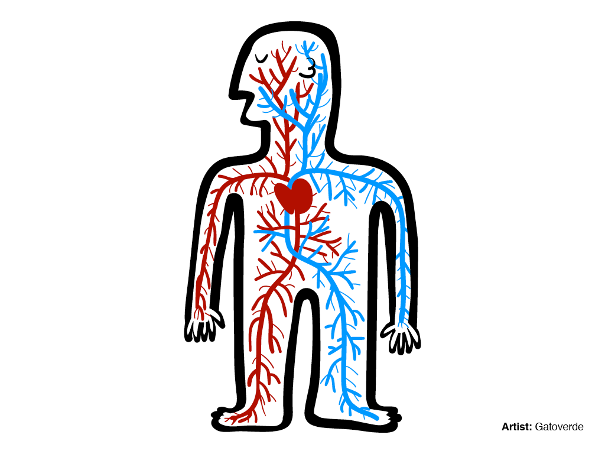
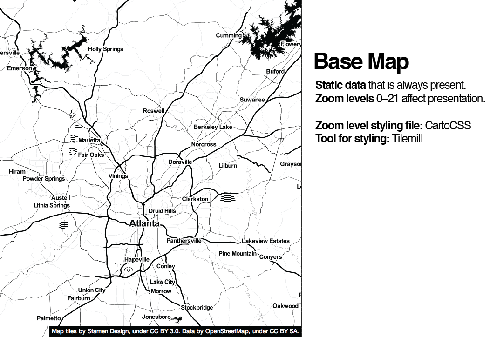
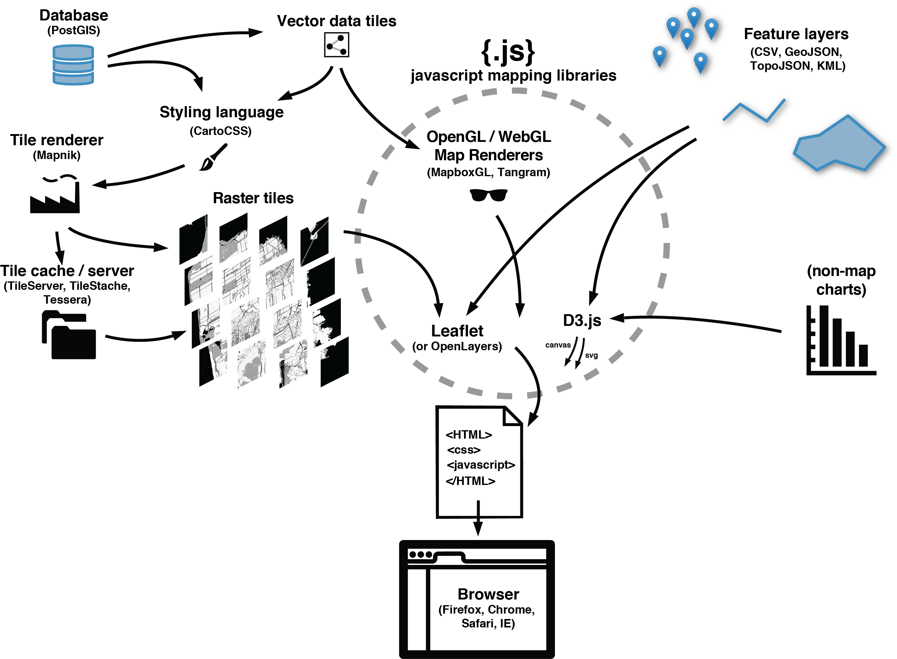
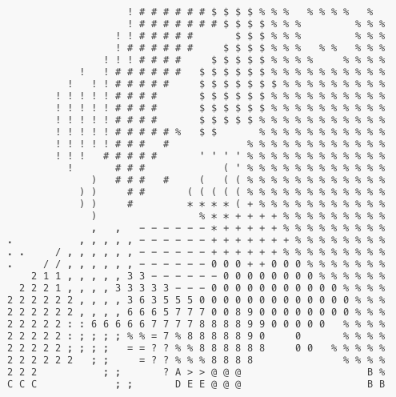
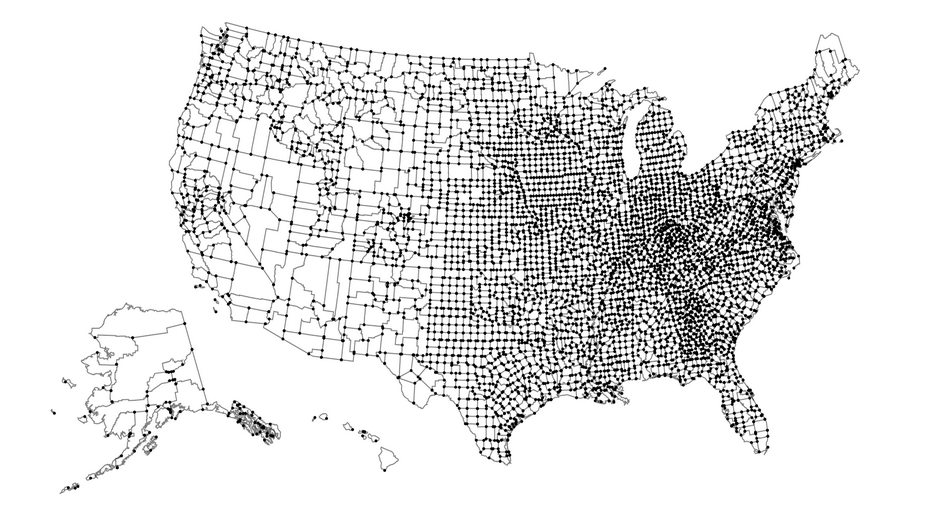

Anatomie d'une Carte web
C'est parti :)
Je vais vous parler des principes de base des cartes sur le web.
Avec des vrais morceaux d'histoire dedans, pour que vous ayez une idée de comment on en est arrivés là
Je vais beaucoup vous parler de Google, mais l'objectif est : une stack 100% open source et open data
données
+ représentation graphique
=carte
 (= dataviz représentant des données géospatiales)
(= dataviz représentant des données géospatiales)Et sinon c'est quoi le rapport entre anatomie et cartes web?
En fait,
Les cartes web comme le corps humain ont des tas de systèmes qui intéragissent entre eux.

Le cerveau, l'estomac des cartes: styles, tuiles, servers, etc.
Les cellules des cartes : les données
Parfois ça ressemble plus à ça
Et donc,
C'est quoi exactement une carte web?
À la place d'une réponse, une autre question:
Quelle est la différence entre une carte web et une carte numérique?
Numérique: sur un écran mais pas forcément accessible par internet.
Une carte web est un genre de carte numérique.
Les deux sont très différents des cartes analogiques (cartes papier, atlas)
On parle donc de cartes dans le navigateur, du genre...

Les cartes sur
mobile sont similaires, mais différentes. C'est compliqué :)

Les
globes numériques comme
Google Earth sont encore un autre genre de bestiau
On parlera plus tard de WebGL :)
un peu d'histoire:

Les gens ont commencé à faire des cartes sur ordinateur :
ArcGIS, QGIS.

En 1996, Mapquest lance son service web.
Itinéraires! En ligne! Révolutionnaire!
En France on a eu Mappy!
Problème: long à charger...
Il fallait rafraîchir la page pour zoomer ou panner.
2005 : Google Maps, la vraie révolution.
Révolution de quoi?
L'interface?
Le marqueur rouge?
Le widget météo?
Non!
(un peu quand même)
La révolution c'était la tuile (tile en anglais).
voila:

Une tuile
=
image de 256x256 pixels

Un tuile peut représenter un bout de carte routière, photo satellite, peu importe : c'est une image

Plein de petites tuiles se chargent
beaucoup + vite qu'un seule grande carte.
Chargement dynamique (viewport et hors viewport).

On appelle ça une
slippy mapUn niveau de zoom = un set de tuiles
 Zoom level 0: une tuile pour la Terre.
Zoom level 0: une tuile pour la Terre.À chaque niveau de zoom, le nombre de tuiles augmente exponentiellement
 Zoom level 1: 4 tuiles pour la Terre.
Zoom level 1: 4 tuiles pour la Terre. Zoom level 2, 3, 4, 5
Zoom level 2, 3, 4, 5 Zoom level 13
Zoom level 13Les tuiles sont rendues à l'avance et stockées en cache
Les tuiles sont comme n'importe quelle image, donc linkables.
Tout est dans l'URL:
http://tile.openstreetmap.org/4/2/6.png
nom du serveur de tuiles.
http://tile.openstreetmap.org/4/2/6.png
z value / zoom level.
http://tile.openstreetmap.org/4/2/6.png
x/y value, la place de la tuile sur la grille.

Google maps utilise la projection de
MercatorEn fait c'est une autre "invention" de Google: Web Mercator
= la Terre dans un carré
:

On reparlera de projections !
Toutes les autres "slippy maps" utilisent ce standard à base de tuiles.
Donc ces tuiles (une collection d'images) forment le base layer/la basemap.
Quand on ajoute des marqueurs, etc : data layers, content layers ou feature layers.
*(Toutes les cartes web n'en ont pas, mais c'est fréquent)
Ce sont souvent des layers vectoriels (point, ligne, polygone).
Parfois avec de l'interaction (cliquer sur un marqueur ouvre une popup).

Formats de fichiers: les SIG/GIS utilisent des
shapefiles, mais pour le web on préfère le
KML, et surtout le
GeoJSON (et topoJSON)
Allons un peu plus loin dans l'anatomie d'une carte web!

La librairie JS récupère les tuiles, ajoute les content layers, gère l'interaction.
En fait, tout n'est pas si simple pour 3 raisons:
#1: les tuiles raster ne peuvent pas être interactives MAIS
UTFGrid (Mapbox) rend cela possible.
UTFGrid is an invisble tile layer made up of arbitrary letters which are indexes into the clickable data
c'est très compliqué de faire une carte détaillée (street map) en D3 MAIS
on peut faire des choses compliquées/pas possibles avec des slippy maps
(possible avec CartoDB aussi)
Et aussi D3 = SVG = utilisable dans Illustrator

D3

IS
IN

SANE
Très puissant, courbe d'apprentissage élevée
Alternative: dataviz, avec slippy maps = CartoDB
#3: les tuiles sont toujours des rasters/images MAIS
En fait, non
Google, encore et toujours
tuiles vectorielles :
style
(pas du SVG)
tuiles vectorielles :
géographie
(offsets dans la tuile)
Rendu côté serveur :
Mapbox Studio Classic...
Par où commencer?
Fabriquer ses propres tuiles?
 Pretty!
Pretty!Héberger les tuiles :
MapBox, ou...
Ajouter des content layers?
Non? Mettez toutes vos données dans les tuiles, utilisez éventuellement UTFGrid pour l'interactivité
Oui? Convertissez vos Shapefiles en GeoJSON avec
OGRE ou fabriquez vos geoJSON:
geojson.ioEnfin,
CartoDB fait tout ça pour vous!
Merci:
You!
Presentation made with
big


 tuiles vectorielles! (demo)
tuiles vectorielles! (demo)


 choropleth maps
choropleth maps cartogrammes
cartogrammes{kind=link}